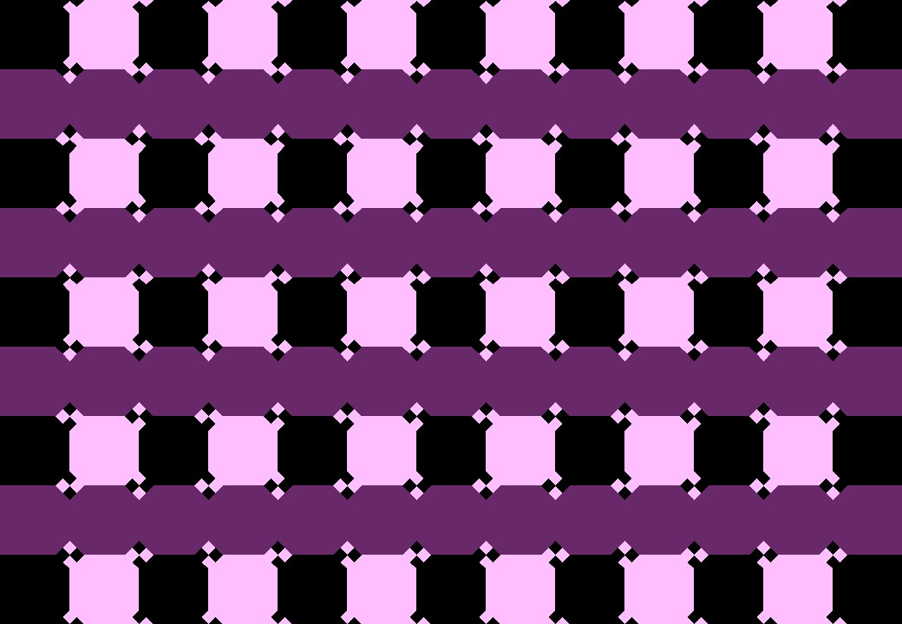
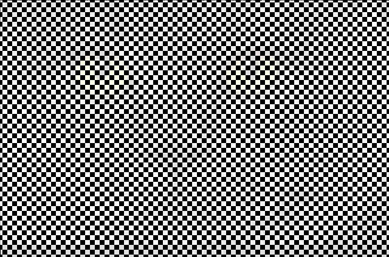

Write a program using dudraw to replicate any one of the optical illusions shown below (you choose). [Note to instructors: this can be modified to any language using most options for graphics packages.] Modify the image in some way to make the image distinct from what is shown below (change colors, number of lines, thickness of lines, or any other modifications)
Submit the project with the usual naming conventions for your file and the usual requirements for documentation (docstrings and comments),
This is a simplified version of the stunning illusion created by Victoria Skye, which won the 2017 Illusion of the Year: (https://illusionoftheyear.com/2017/10/skye-blue-cafe-wall-illusion/)
To see the image, either drag the window, or. turn your head to move your eyes quickly across the screen. The image is created by using a background image, lightening it up significantly, and drawing a checkerboard of black squares on top of it. If you implement this illusion, upload a folder containing both your source code and your background image. This example was inspired by Akiyoshi Kitaoka's work. (His optical illusions webpage: https://www.ritsumei.ac.jp/~akitaoka/index-e.html, and a twitter post showing his masking example: https://twitter.com/AkiyoshiKitaoka/status/980340277264003072
This illusion was first demonstrated by Stuart Anstis (http://anstislab.ucsd.edu/illusions/footsteps/)